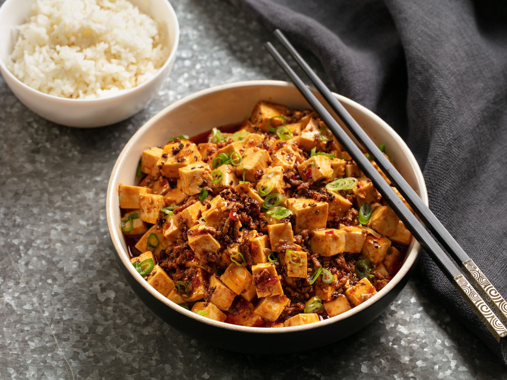

Mapo Tofu

Description
Originated from Sichuan, China. Mapo tofu is now a popular dish around the world. Three words to decribe it would be hot, spicy, and numb! It has rich flavors and complement well with rice or noodles. Spicy food lovers, now it's time for you to try something new.
Ingredients
- 1 pound of medium tofu
- 1/4 pound of ground beef (could substitute with pork)
- one green onion
- one tbsp of Sichuan bean paste
- one tbsp of tempeh
- one tbsp of chili powder
- one tbsp of cooking wine
- two tbsp of olive oil
- one tbsp of ground Sichuan pepper
Steps
- Cut the tofu into small squares then pour into a pot and boil with soy sauce until the tofu floats.
- Get a new pan, stir fry the ground beef with cooking wine and a little salt on low heat. Turn off the heat when the meat is well done.
- Put meat aside and clean the pan. Add oil then Sichuan bean paste, tempeh, and chili powder. Mix them well and stir fry on low heat to bring out the rich flavors.
- Add hot water and tofu into the pan. Slowly push the tofu with spatulas to let it absorb the spice while avoid breaking it. Simmer for three minutes.
- When time is up, add the beef and more soy sauce. Keep pushing the tofu to mix it with the meat.
- Finally, add chopped green onions and ground Sichuan pepper. Don't forget to get yourself a bowl of rice. Enjoy!
Back to homepage